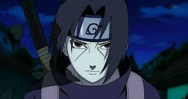
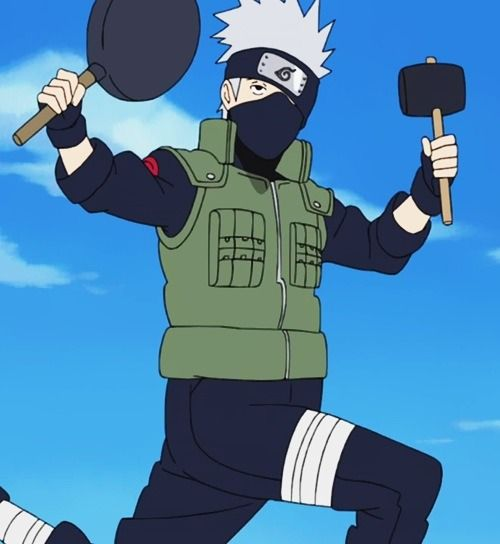
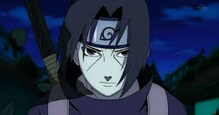
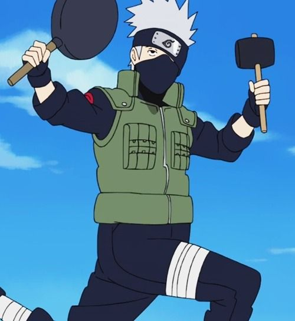

Naruto
 



Наруто — культова манґа- та аніме-серіал, створений і намальований манґакою Масаші Кішімото. Вперше манґа опублікована у 1999 році у 43-му томі японської версії журналу «Shonen Jump». Том 36 манги «Наруто» розійшовся більше, ніж 71-мільйонним тиражем у Японії
Автор цього сайту подивився лише 86 серій, але знає що Наруто головний герой. Саме аніме вже закінчилось, але зараз продовжується Боруто. Декілька цікавих фактів. Аніме майже закрили якось раз. Одна могутня японська організація була не особливо задоволена зашкалюють кількістю смертей в "Наруто" (гарячий привіт Р. Р. Мартіна і "престол"). Вона буквально змусила одного з головних спонсорів перестати вкладати гроші в серіал. Але знайшлися інші охочі підтримати "Наруто", так що пронесло. Наруто повинен був використовувати магію замість ніндзютсу. Але на якомусь етапі автор вирішив, що тема з чарами занадто сумнівна, тому зробив героїв ніндзя. Всесильне тріо Джірайя, Цунаде і Орочімару - це відсилання до роману 19 століття, "Пісня про героя Джирайя". Улюблена лапшична Наруто, Ichiraku, існує в реальному світі. Вона знаходиться поруч з університетом, в якому навчався автор манги Масаши Кишимото.